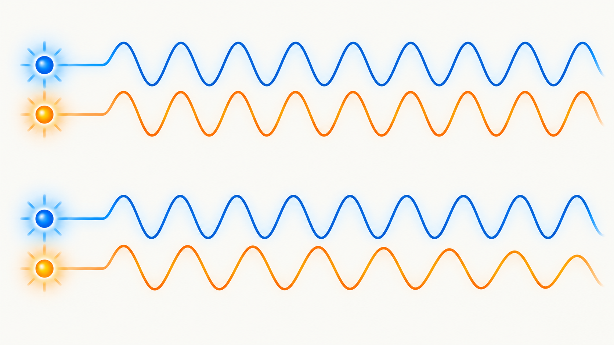
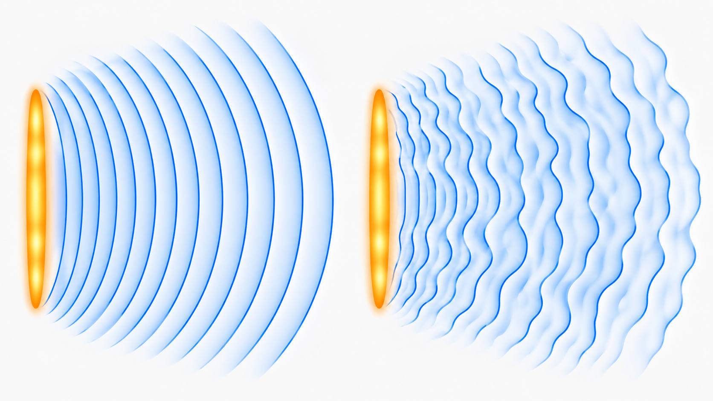
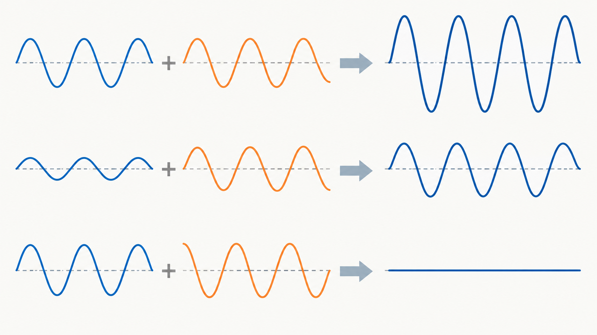

Livello intuitivo: Due altalene possono muoversi insieme oppure una avanti e l’altra indietro. Due onde si rinforzano o si indeboliscono secondo il loro ritmo relativo.
Per essere maggiormente rigorosi: La sovrapposizione riguarda le ampiezze dei campi, non una semplice somma delle intensità. Per frange stabili occorrono coerenza e componenti di polarizzazione compatibili.
Obiettivi di apprendimento
- Distinguere coerenza temporale e spaziale.
- Applicare il principio di sovrapposizione.
- Riconoscere interferenza costruttiva e distruttiva.
Perché alcune onde producono frange stabili
Due onde possono sommarsi in ogni punto in cui si incontrano. Per osservare una figura di interferenza stabile, però, la loro relazione di fase non deve cambiare in modo casuale.
Due sorgenti sono coerenti quando mantengono una relazione di fase prevedibile. Questo non significa soltanto “stessa frequenza”: serve anche che la differenza di fase resti sufficientemente stabile durante l’osservazione.
Coerenza temporale
La coerenza temporale descrive per quanto tempo un’onda conserva una fase prevedibile. Una sorgente quasi monocromatica presenta una coerenza temporale maggiore di una sorgente con uno spettro molto ampio.
Un’analogia utile è quella di due metronomi: se mantengono lo stesso ritmo e lo stesso sfasamento, la relazione tra i loro battiti resta stabile. Se uno cambia ritmo, la sincronizzazione si perde.

Coerenza spaziale
La coerenza spaziale descrive la correlazione di fase tra punti diversi di un fronte d’onda. Un fascio ben collimato proveniente da una piccola sorgente può avere una buona coerenza spaziale. Una sorgente molto estesa tende invece a sovrapporre contributi con fasi differenti, rendendo meno visibili le frange.

Principio di sovrapposizione
In un mezzo lineare, la perturbazione totale è la somma delle perturbazioni prodotte dalle singole onde:
Cosa Vuol Dire?
Livello intuitivo: Lo spostamento totale è la somma degli spostamenti delle singole onde nello stesso punto e istante.
Due contributi uguali nello stesso verso si sommano; in versi opposti possono cancellarsi.
Per essere maggiormente rigorosi: Vale in regime lineare. Per la luce si sommano i campi elettrici prima di calcolare l’intensità.
Le onde continuano poi a propagarsi conservando la propria identità. La sovrapposizione non implica che le onde si distruggano definitivamente.
Interferenza
Se due onde sinusoidali hanno la stessa frequenza e arrivano in fase, le ampiezze si sommano: si ha interferenza costruttiva. Se arrivano in opposizione di fase, con differenza di fase radianti, una cresta coincide con una valle dell’altra onda e si ha interferenza distruttiva.
Per due onde sinusoidali della stessa frequenza, di uguale ampiezza e con polarizzazioni lineari parallele, la risultante ha ampiezza:
Cosa Vuol Dire?
Livello intuitivo: Per due onde di uguale ampiezza, l’ampiezza risultante è due volte A per il valore assoluto del coseno di metà sfasamento.
In fase: 2A; in opposizione: zero. Un’ampiezza doppia non significa intensità doppia: idealmente l’intensità quadruplica rispetto a una singola onda.
Per essere maggiormente rigorosi: in radianti; stessa frequenza, ampiezze uguali e polarizzazioni lineari parallele. La relazione vale per contributi scalari o per la stessa componente del campo elettrico. Non descrive direttamente la somma incoerente.
Per si ottiene il massimo. Per la risultante si annulla idealmente. Tra questi estremi esistono tutti i casi intermedi.

In sintesi
- La coerenza rende prevedibile la relazione di fase.
- La coerenza temporale riguarda l’evoluzione nel tempo; quella spaziale riguarda punti diversi del fronte d’onda.
- L’interferenza deriva dalla somma delle ampiezze, non dalla somma diretta delle intensità.